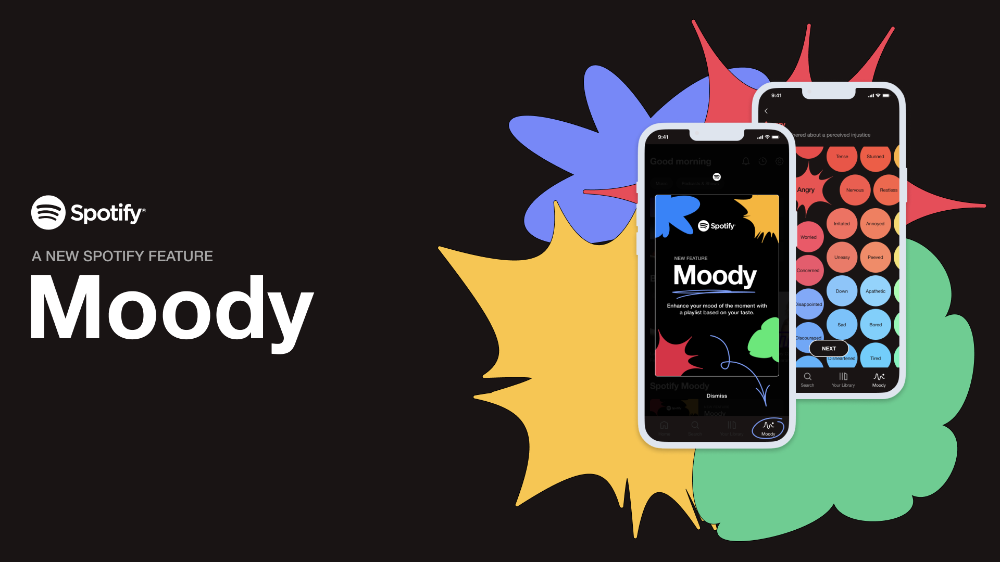

<!DOCTYPE html>
<html lang="en">
<head>
    <meta charset="utf-8">
    <meta name="viewport" content="width=device-width, initial-scale=1.0">
    <meta http-equiv="X-UA-Compatible" content="ie-edge">
    <title>Marta Aleixo Portfolio</title>
    <link rel="stylesheet" href="assets/css/style.css">
    <link rel="preconnect" href="https://fonts.googleapis.com">
    <link rel="preconnect" href="https://fonts.gstatic.com" crossorigin>
    <link rel="preconnect" href="https://fonts.googleapis.com">
    <link rel="preconnect" href="https://fonts.gstatic.com" crossorigin>
</head>
</html>
<body>
<header>
    <div class="container-2">
        <h1><a href="index.html" id="intro">marta aleixo</a></h1>
        <button class="btn--toggle-menu">
<svg xmlns="http://www.w3.org/2000/svg" width="24" height="24" viewBox="0 0 24 24" fill="none" stroke="currentColor" stroke-width="2" stroke-linecap="round" stroke-linejoin="round" class="feather feather-align-justify"><line x1="21" y1="10" x2="3" y2="10"></line><line x1="21" y1="6" x2="3" y2="6"></line><line x1="21" y1="14" x2="3" y2="14"></line><line x1="21" y1="18" x2="3" y2="18"></line></svg>        </button>
        <nav id="main-navigation">
            <ul>
              <!-- <li class="menu-nav_item active"><a href="index.html">home</a></li>-->
                <li class="menu-nav_item"><a href="work.html" class="menu-nav_link">work</a></li>
                <li class="menu-nav_item"><a href="cv.html" class="menu-nav_link">cv</a></li>
                <li class="menu-nav_item"><a href="about.html" class="menu-nav_link">about</a></li>
                <li class="menu-nav_item"><a href="contacts.html" class="menu-nav_link">contacts</a></li>
            </ul>

        </nav>
    </div>
</header>


<!-- <header>
    <div class="container">
        <h1><a href="index.html">marta aleixo</h1>
        <nav id="main-navigation">
         colocar em comentario ---- <ul class="menu-nav"> 
                <ul>
                <li class="menu-nav_item active"><a href="index.html">home</a></li>
                <li class="menu-nav_item"><a href="work.html" class="menu-nav_link">work</a></li>
                <li class="menu-nav_item"><a href="cv.html" class="menu-nav_link">cv</a></li>
                <li class="menu-nav_item"><a href="about.html" class="menu-nav_link">about</a></li>
                <li class="menu-nav_item"><a href="contacts.html" class="menu-nav_link">contacts</a></li>
            </ul>
        </nav>
    </div>
</header>-->    <main class="container">
        <div class="wrapper-intro">
            <h1>Moody</h1>
        </div>
        <div class="wrapper-intro-2">
            <h2>What if you could use Spotify as a well-being tool?</h2>
        </div>
        <div>
            <figure class="">
                
            </figure>
        </div>
        <div class="wrapper">
            <div>
                <h3>The problem</h3>
                Mental health problems have increased globally, and music
                usually plays an essential role as a tool to overcome them.
            </div>
            <div>
                <h3>The goal</h3>
                Understand how Spotify might be used as a well-being
                tool to provide emotional support according to user needs.
                Validate how we could offer different music experiences to
                relieve emotional distress interactively.
            </div>
        </div>
        <div class="wrapper-2">
            <div>
                <h3>The solution</h3>
                A mood-boosting feature that gives emotional support and makes wellness a strategic focus for users' lives.
            </div>
            <a href="https://www.behance.net/gallery/162740343/Moody-A-New-Spotify-Feature" target="_blank" class="moodybh">know more ↗</a>
        </div>


    </main>
<footer>
    <p class="copy">©marta aleixo 2023</p>
</footer>
<script src="/assets/js/script.js"></script>


</body>

</html>